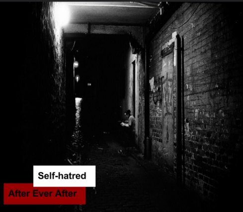

Challenge: Design a Band
Challenge Information
Design thinking is using empathy to try to solve a problem or create a product. We study design thinking to create something with someone in mind. To create something that would be appealing to others and not just for ourselves. Design thinking uses empathy to figure out what others would want to see or what people need.
In this challenge, we used the DEEP design process to design a band. The first step of the DEEP process is discover. In the discover step we brainstormed different band names that we liked and we put the together to find similarities between various band names. The second step of the DEEP process is empathy. In the empathy step we asked random students in the class what they would like see and what they liked in a band cover. The third step in the DEEP process is experiment. In the experiment process we clicked on a random Wikipedia article and used the similarities in the discover process to get a band name from the Wikipedia article title. We also chose an album title using random quotes from Wikipedia that would be appealing to our audience. Lastly in that step, we decided on our album cover using the feedback we got from surveying random students in the class. The final step in the DEEP process is produce. In the produce step we put together an album cover that included the band name and the album title. We also created a little band biography of how the band was made and how their album was made and what inspired it.
In the process of making my album cover for my band, I used the information I got from asking random students in the class what they would like to see and I put it all together on an album cover. I used a picture I got from Flicker that was a result from the survey I asked. The picture I used was abstract instead of realistic. I used Sans Serif instead of Serif because the results were leaning towards Sans Serif. The colors I included in the album cover were black, white, and dark red because those were the colors that most people said they would like to see on it.
Album Cover
Band Biography
After Ever After was formed in Austin, Texas by two best friends: Olivia Montes and Jack McCollins. Olivia and Jack formed After Ever After on May 23 of 2013. They were on their way to grab some pizza after school. They passed by an alley and heard music playing. They decided that they would go down the alley to check out the music. It turned out to be a few teenagers around 15 years of age messing around with the cans and bins, making some music with it. They were inspired by those teenagers, so they decided to make music too. After Ever After’s first album was inspired by those teenagers.
Self-hatred was made when they were both going through a phase.